Navigateur internet basé sur Chromium & Electron
Version 1.0.0
Navigateur internet open source basé sur Electron & Chromium. Conçu pour être simple, rapide et respectueux de votre vie privée.
Wouaff — 2026